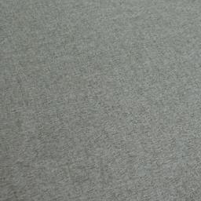
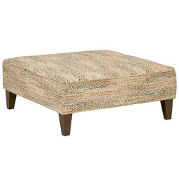
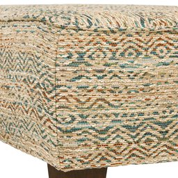
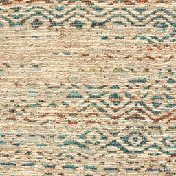
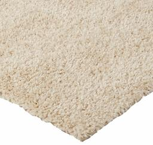

Nicolás Pavón
Classifying Amazon images
Introduction
This is the continuation of the project on neural networks and image classification from the course "Artificial Intelligence 2" taught by Juan Kurucz and Ernesto Ocampo at the Catholic University of Uruguay. It is about training a neural network to classify images from an e-commerce product dataset, where i deal with dataset balancing issues and many other problems with some cool techniques.
In this blog, I explain in detail the problems and solutions encountered along the way, which makes the full version quite extensive (15 minutes of reading). If you are short on time, you can switch to the summarized version (8 minutes) by clicking the button below:
The issue
In the last 20 years, e-commerce has grown exponentially. Just look at the power and size of sites like Amazon, Alibaba, or even Mercado Libre to realize how important they are today. From this, we can conclude that if there’s something these tech giants have, it's a massive amount of data, including many images. However, data is useless if it cannot be interpreted and worked with, so it's helpful to classify it to make proper use of it and maximize its potential.
However, my goal is not to solve this huge global challenge. To be realistic, I’m more interested in showcasing my machine learning skills 😎. So, here we go!
The data
Among all the available datasets, we came across an interesting one, the Amazon Berkeley Objects (ABO) Dataset. This dataset provides images of approximately 147,000 Amazon products, along with corresponding metadata, including category, color, keywords, brand, name, model, among others. It also offers 3D renders and some other interesting details. While we have yet to explore the data in depth to determine its purity, we appreciate the fact that it comes from Amazon, making the images ideal for this problem.
The technology
Although transformers are commonly used for this type of problem today, in this case, we will use convolutional networks, starting with a pre-trained model like Inception-v3 and applying transfer learning. We will remove the top classification layers and add new layers specialized for this task. Finally, we will apply fine-tuning to improve performance. The code was developed in Google Colab.
The objective
Our goal is to classify the product in the image, assuming the image corresponds to an e-commerce product. Taking this into account and analyzing the dataset, we observed the product_type property, which has around 574 classes that vary in level of specificity, from "RING" to "BISS" (Business, Industrial, and Scientific Supplies). We will use this property from the dataset as the starting point to train our model.
Resume
E-commerce has grown tremendously in recent decades, driven by giants like Amazon and Alibaba. With this growth, the amount of data has also increased, especially in the form of product images. To make the most of this data, it is essential to classify it properly. Although, to be realistic, in this case, I’m not here to save global commerce, but rather to show what I can do in machine learning 😅. We’ll be working with the Amazon Berkeley Objects (ABO) Dataset., which contains images and metadata of over 147,000 Amazon products.
To tackle this classification problem, we’ll use convolutional networks and transfer learning with a pre-trained model like Inception-v3. We will remove the original classification layers and replace them with custom layers to improve performance on the specific task of product classification, fine-tuning the model. The goal is to classify as many different product classes as possible based on the product_type property of the dataset, which ranges from highly specific categories like "RING" to broader ones like "BISS" (Business, Industrial, and Scientific Supplies).
Dataset structure and info
Dataset structure
The dataset includes several files for download, of which we are interested in listings.tar (product listings and metadata) and images-small.tar (catalog of images resized to a maximum of 256 pixels).
The listings.tar file contains 15 .json files, each with a list of objects, with each object representing an Amazon product. We will use a script to convert the relevant information from these objects into .csv files, making them easier to work with. The objects have a series of attributes, and we will be focusing on item_id, product_type, main_image_id, and other_image_id.
Dataset Attributes and Statistics
Once we have the initial .csv file, we proceed to observe the class distribution:

Initial dataset
As seen in the image, the dataset is highly imbalanced, with many examples for certain categories and almost none for others. Upon closer inspection, we see that there are 574 categories, of which 460 have fewer than 100 examples. This is problematic, as we need a good number of images per category to successfully identify these types of objects, and only 100 or fewer is not enough.
To deal with this issue, we will initially work only with the categories that have more examples, balancing them to avoid bias between categories during training. Originally, we decided to work with 170 categories that had at least 50 examples per category. This didn’t work, so we reduced the dataset to include only categories with at least 150 examples, with a cap of 400. This was a somewhat arbitrary decision, so if necessary, a better selection of categories and examples could be made.
The dataset is imbalanced, with 574 categories, of which 460 have fewer than 100 examples, making it difficult to correctly identify objects. To address this, categories with at least 150 examples and a maximum of 400 were selected. This selection was somewhat arbitrary and could be improved if needed.
Once the filters were applied, we can observe the statistics of the final dataset:

Simplified dataset
In this dataset, we have 80 categories, much better balanced than the 574 in the initial dataset. This will make the task easier, as the final neural network will be simpler to train and will have a significantly higher average number of examples per category.
Dataset inspection
In this step, we will analyze the previously refined dataset in search of potential obvious issues, among which we found:
Confusable categories:
These categories contain objects that are very similar to each other. In some cases, the only way to differentiate them is by reading the text on the product label. This is a problem, as it will be difficult for the neural network to learn the differences.
- ACCESORY ↔ HAT
- STORAGE_HOOK ↔ TOOLS
- NUTRITIONAL_SUPLEMENT ↔ VITAMINS ↔ HEALTH_PERSONAL_CARE
- LUGGAGE ↔ SUIT_CASE
- FINERING ↔ RING
- FINENECKLACEBRACALETANKLET ↔ NECKLACE
- FINEEARING ↔ EARRING
Except for the cases of 'fine x' ↔ 'x', we will initially keep these categories and observe if they indeed pose classification issues. For the 'fine x' cases, we will keep the non-"fine" ones, as they are more general and still preserve the overall form.
Generic categories:
These categories contain very diverse objects, making it harder to train the network to find shared patterns. If all the objects in a category vary in shape, there is no set of features or patterns that unify them, and the network will not be able to categorize them efficiently. This would only be possible if each subgroup of objects in this category had enough images, but with maybe only 90 out of 400 images belonging to one of these objects, it will be very difficult to train. For this reason, these categories will be removed from the dataset.
These categories are too diverse, making it difficult for the network to find common patterns. Since there aren’t enough images per subgroup within each category, the network won’t be able to classify them efficiently, so they will be removed from the dataset.
- HOME
- WIRELESS_ACCESORY
- ACCESORY_OR_PART_OR_SUPPLY
- BABY_PRODUCT
- COMPUTER_ADDON
- GROCERY
- SPORTING_GOODS
- PANTRY
- KITCHEN
- JANITORY_SUPPLY
- HOMEFURNITURE_AND_DECOR
- HARDWARE
Examples of HOME products
(They don't look alike at all)
Dataset Balancing
As previously mentioned, a potential issue is the bias that can arise from imbalanced examples when training a neural network. If in our network we have a thousand examples of shoes and a hundred examples of sofas, for the network, the likelihood of receiving a shoe is 10 times higher than receiving a sofa. In this case, the network might always return "shoe," being correct most of the time. This would drastically affect classification, so we aim to keep the dataset as balanced as possible. In our case, we have several categories with fewer than 400 examples, which is the ideal number we want to maintain across all categories. To achieve the desired balance, we will also work with the "other_images" available for each object provided by the dataset. These images can help us complete the number of images for the categories that need them.
The imbalance of examples can create biases in the neural network, favoring categories with more examples. To avoid this, it is important to balance the dataset. Since some categories have fewer than 400 examples, we will use the available "other_images" to fill in the necessary images.
Satisfactory Examples
After a not-so-brief inspection, we observed satisfactory cases where the "other_images" are sufficiently similar (but not identical) to the original product.
Object from the SOFA category
Main image
Other images
Problematic Examples
However, we also found images that are not of the product itself, but rather of a descriptive table, a color, or a general shot where the object is almost indistinguishable.
Object from the LEGUME category
Main image
Other images
Object from the RUG category
Main image
Other images
This is an issue for us. We are interested in having some variability in the images to make our network more robust, but when we have overly complex images or images that don’t even contain the object itself, they harm the network's training, as it will associate incorrect patterns with the category in question. Remember the RUG example! It will be a problem in the future.
To overcome this issue, we will filter the "other_images" using pre-trained neural networks. In this case, we will use the VGG16 model, removing the classification layers. This will leave us with a network that only detects features in an image, but doesn’t classify it. With this network, we will proceed to extract the features from the main image of each object (main_image) and then compare those features with each of the object's "other_images," obtaining a similarity coefficient between them. This coefficient will indicate how similar the "other_images" are to the main image, assigning a very low value to those that are not similar.
These cases complicate training, as overly complex or irrelevant images cause the network to learn incorrect patterns. To solve this, we will use the VGG16 model, removing the classification layers, to extract and compare the features between the main image and the "other_images." This way, we will obtain a similarity coefficient that will help us filter out less useful images.
Here are some examples of the use of this technique:
Similarity scores of a SOFA
Similarity score:1
Main image
0.861
0.640
0.599
0.196
Other images
Similarity scores of an OTTOMAN
Similarity score:1
Main image
0.819

0.689

0.581
0.192
Other images
Great! We see that it works; however, we encountered some issues:
The RUG category gives us some trouble. If we look at a few examples, we can see that the "main_image" often shows the rug in a generic scene, somewhat "hidden." This causes the similarity coefficient of the "other_images" to be very low, leaving out many useful images.
Similarity scores of a RUG
Similarity score:1
Main image
0.273
0.213
0.187
Other images
We will use a threshold of 0.5 as the criterion to select the "other_images," choosing those with a similarity coefficient higher than this to reach 400 examples by category. However, for the RUG category, we will use a threshold of only 0.2 because, due to the characteristics of the "main_images," most of the "other_images" would be excluded.
Great! We see that it works, so we will use a threshold of 0.5 as the criterion to select the "other_images," choosing those with a similarity coefficient higher than this to complete the missing images in a category.
Final Dataset
To wrap up, we organized the images by category using the similarity scores of the "other_images" to fill in those with few examples. The resulting dataset has 65 categories and about 25,800 images. Although some categories didn't reach 400 images, those with more than 320 were considered sufficient.
Finally, to complete the dataset and train the neural network, we need to organize the images, grouping them by category. Once we know the similarity scores of the "other_images," we move all the "main_images" to their respective category folders and fill in those with less than 400 examples with the "other_images" of highest similarity score.
Here is the balance of the resulting dataset, much better!

Final dataset
This dataset contains 65 categories and approximately 25,800 images. We acknowledge that some categories did not reach 400 images due to the lack of a good similarity score, but since they still have a considerable amount (>320), we will simply overlook it.
Final Categories:
Neural Network Design and Training
Network Training
Achieving good network performance was challenging. As previously mentioned, we opted for transfer learning, starting with a pre-trained model without its top layers (the classification layers). This model would be responsible for detecting the main features in the images, and then custom layers would be added to classify these features into the 65 possible categories. Finally, fine-tuning was applied to optimize performance.
Initially, we used the VGG-16 model, adding several classification layers (3 dense layers and 1 dropout layer). This model performed very poorly.
We decided to simplify the problem by reducing the number of categories and also using Inception-v3. Improvements started to show, especially when the classification stage was simplified to 2 dense layers, 1 dropout, and 1 BatchNormalization layer.
After several iterations, satisfactory metrics were achieved. The most performant model only adds a single dense layer with 256 units, accompanied by a Dropout(0.4) and a data augmentation layer with various techniques to avoid overfitting. Surprisingly, this simple network is one of the most performant. This suggests that the Inception-v3 model already does an excellent job at detecting the features in an image, leaving little work to complete the model.
Once we found an efficient network design, we continued testing, studying what benefits and harms the model. In the following table, you can see the metrics of the different designs tested:
Achieving good performance was challenging. Transfer learning was used, starting with a pre-trained model without its classification layers, and custom layers were added to classify the 65 categories. Initially, VGG-16 and several dense layers were tested, but performance was poor.
By simplifying the problem by reducing categories and using Inception-v3 with a simpler architecture (2 dense layers, dropout, and BatchNormalization), significant improvements were observed. Finally, the most efficient model only added a 256-unit dense layer, dropout, and data augmentation, demonstrating that Inception-v3 already detects features very well, leaving little additional work.
Below are the metrics for the different designs tested:
Comparison table of the models
| Version | Dense Layers Fully connected layers where each neuron is connected to all neurons in the previous layer. | Data Augmentation Technique to increase the dataset size by applying transformations such as rotations, cropping, or image flipping. |
BatchNorm Batch normalization, which speeds up training and improves network stability. | Dropout Technique to prevent overfitting by randomly dropping neurons during training. | Accuracy Model accuracy, indicating the proportion of correct predictions. | Loss Measures how different the model's predictions are compared to the actual values. | Val Accuracy Model accuracy on the validation set, indicating performance outside the training set. | Val Loss Measures how different the model's predictions are on the validation set to detect overfitting. | |
|---|---|---|---|---|---|---|---|---|---|
| v1.1 | 1x(256) | ✅ | ✅ | ✅ | 0.89 | 0.35 | 0.86 | 0.48 | |
| v1.2 | 1x(256) | ❌ | ✅ | ✅ | 0.97 | 0.09 | 0.86 | 0.56 | |
| v1.3 | 1x(256) | ✅ | ❌ | ✅ | 0.91 | 0.26 | 0.86 | 0.46 | |
| v1.4 | 1x(256) | ✅ | ✅ | ❌ | 0.95 | 0.15 | 0.86 | 0.51 | |
| v2.1 | 1x(256) 1x(512) | ✅ | ✅x2 | ✅x2 | 0.83 | 0.57 | 0.84 | 0.54 | |
| v2.2 | 1x(512) 1x(1024) | ✅ | ✅x2 | ✅x2 | 0.85 | 0.47 | 0.84 | 0.55 |
All models use Inception-v3 and were trained with 20 epochs in the initial training and 15 in the fine-tuning stage
Analyzing these statistics, we can observe substantial improvements in accuracy and loss values in models v1.2 and v1.4, but at the same time, we notice slightly worse val_loss values, indicating overfitting, which makes sense. The data augmentation layer aims to make our model more robust by altering images in various ways, such as random rotations, changes in contrast or brightness, random zooms, etc. Additionally, the primary goal of dropout layers is to prevent overfitting, so it is understandable that performance worsens in some cases.
On the other hand, we see that model v1.3, which lacks the BatchNormalization layer, shows an interesting improvement in performance. While these types of layers are very important and often used in image classification models, we can attribute this drop in performance to the fact that it is being used in the final classification stage of the model. It might be more useful in an intermediate stage of a more complex model.
Another interesting observation from the statistics is the similarity in performance between models regarding val_accuracy. As we can see, all models have very similar values. My theory is that this is due to several validation images simply being mislabeled. These are similar cases to the RUG category, where the first image not only contains the rug but also includes other objects like sofas, chairs, paintings, etc. Considering this, we can assume that the model will never be able to surpass a certain level of performance because some images are classified under a specific category but contain objects from another. This is an area worth studying and improving.
Finally, we observe that increasing the complexity of the model only worsens the performance, which is somewhat surprising, but on the other hand, it makes sense since the Inception_v3 base model is very good at its job, and possibly its output cannot be improved. This leaves us with the sole task of classifying the already well defined and detected features into the x categories of our problem.
When analyzing the statistics, improvements in accuracy and loss are observed in models v1.2 and v1.4, but an increase in val_loss suggests overfitting, which is understandable due to the underuse of data augmentation and dropouts to prevent it. In model v1.3, the absence of BatchNormalization improved performance, possibly because this layer is more useful in intermediate stages of complex models.
Additionally, the similarities in val_accuracy across models could be due to mislabeled images in the validation set, limiting the maximum achievable performance. Finally, increasing the complexity of the model worsens its performance, reinforcing the idea that Inception_v3 already does an excellent job at detecting features, leaving little room for improvement.
Selected Model Statistics
The winning model was v1.3. You can check out the complete code, explained in detail, in this Colab; I recommend giving it a look. Below are some statistics of the model:
Initial training

Unlike the other models, the training for this one was increased from 20 epochs to 40 to squeeze out a bit more performance. The training took approximately 13 minutes.
Fine tunning

Similarly, the epochs in the fine-tuning stage were increased to 25, although, as seen in the graph, signs of overfitting start to appear around epoch 10-15, with little improvement in val_accuracy and val_loss, which are the metrics we are most interested in. The fine-tuning took approximately 30 minutes.
Category Statistics
In the following table, you can see the Precision, Recall, and F1 values for each category, where the first ones are those with the worst performance.
| Category | Precision Precision measures how many of the positive predictions are correct. | Recall Recall measures how many of the actual positives were correctly identified. | F1-Score F1 is the harmonic mean between precision and recall. | Support Support is the total number of occurrences of a specific class in the dataset. |
|---|---|---|---|---|
| HEALTH_PERSONAL_CARE | 0.71 | 0.57 | 0.63 | 83 |
| SHOES | 0.80 | 0.68 | 0.74 | 66 |
| LUGGAGE | 0.80 | 0.67 | 0.73 | 83 |
| ACCESSORY | 0.85 | 0.70 | 0.77 | 76 |
| CHAIR | 0.82 | 0.70 | 0.76 | 80 |
| OUTDOOR_LIVING | 0.81 | 0.69 | 0.75 | 81 |
| BISS | 0.69 | 0.63 | 0.66 | 73 |
| BEAUTY | 0.68 | 0.65 | 0.67 | 75 |
| OFFICE_PRODUCTS | 0.67 | 0.65 | 0.66 | 83 |
| WASTE_BAG | 0.86 | 0.90 | 0.88 | 69 |
| NUTRITIONAL_SUPPLEMENT | 0.71 | 0.82 | 0.76 | 74 |
| SKIN_CLEANING_AGENT | 0.78 | 0.82 | 0.80 | 93 |
| AUTO_ACCESSORY | 0.69 | 0.85 | 0.76 | 65 |
| VITAMIN | 0.82 | 0.75 | 0.79 | 85 |
| HOME_BED_AND_BATH | 0.86 | 0.74 | 0.80 | 74 |
| SHELF | 0.89 | 0.76 | 0.82 | 87 |
| FOOD_SERVICE_SUPPLY | 0.75 | 0.82 | 0.79 | 78 |
| TOOLS | 0.84 | 0.78 | 0.81 | 86 |
| COFFEE | 0.85 | 0.91 | 0.88 | 76 |
| WALLET | 0.83 | 0.93 | 0.88 | 70 |
| NECKLACE | 0.99 | 1.00 | 0.99 | 83 |
| BATTERY | 0.96 | 0.95 | 0.96 | 83 |
| HANDBAG | 0.96 | 0.96 | 0.96 | 75 |
| BACKPACK | 0.82 | 0.97 | 0.89 | 69 |
| BREAD | 0.97 | 0.96 | 0.96 | 70 |
| BED | 0.86 | 0.88 | 0.87 | 73 |
| BOOT | 0.89 | 0.95 | 0.92 | 86 |
| CABINET | 0.90 | 0.91 | 0.90 | 95 |
| CHARGING_ADAPTER | 0.93 | 0.91 | 0.92 | 81 |
| CLEANING_AGENT | 0.89 | 0.87 | 0.88 | 82 |
| DESK | 0.91 | 0.90 | 0.90 | 79 |
| DRINKING_CUP | 0.92 | 0.95 | 0.94 | 76 |
| EARRING | 0.97 | 0.95 | 0.96 | 88 |
| FLAT_SHEET | 0.91 | 0.91 | 0.91 | 66 |
| FURNITURE_COVER | 0.88 | 0.93 | 0.90 | 84 |
| HARDWARE_HANDLE | 0.87 | 0.95 | 0.91 | 62 |
| HAT | 0.86 | 0.88 | 0.87 | 84 |
| HEADBOARD | 0.94 | 0.93 | 0.94 | 86 |
| HEADPHONES | 0.96 | 0.94 | 0.95 | 87 |
| HERB | 0.99 | 0.94 | 0.96 | 71 |
| LAMP | 0.89 | 0.94 | 0.92 | 70 |
| LEGUME | 0.96 | 0.99 | 0.97 | 88 |
| LIGHT_BULB | 0.91 | 0.97 | 0.94 | 62 |
| LIGHT_FIXTURE | 0.90 | 0.89 | 0.90 | 84 |
| OTTOMAN | 0.85 | 0.88 | 0.86 | 83 |
| PET_SUPPLIES | 0.92 | 0.79 | 0.85 | 72 |
| PILLOW | 0.87 | 0.98 | 0.92 | 87 |
| PLANTER | 0.88 | 0.99 | 0.93 | 80 |
| PORTABLE_ELECTRONIC_DEVICE_COVER | 0.96 | 0.87 | 0.91 | 84 |
| RING | 1.00 | 0.94 | 0.97 | 88 |
| RUG | 0.98 | 0.97 | 0.97 | 90 |
| SAFETY_SUPPLY | 0.89 | 0.84 | 0.86 | 83 |
| SANDAL | 0.87 | 0.93 | 0.90 | 80 |
| SAUTE_FRY_PAN | 0.96 | 0.95 | 0.96 | 83 |
| SCREEN_PROTECTOR | 0.96 | 0.99 | 0.97 | 87 |
| SKIN_MOISTURIZER | 0.91 | 0.89 | 0.90 | 87 |
| SOFA | 0.79 | 0.86 | 0.82 | 86 |
| STOOL_SEATING | 0.96 | 0.96 | 0.96 | 79 |
| STORAGE_BINDER | 0.93 | 0.97 | 0.95 | 69 |
| STORAGE_HOOK | 0.94 | 0.97 | 0.95 | 90 |
| SUITCASE | 0.87 | 0.95 | 0.91 | 80 |
| TABLE | 0.82 | 0.79 | 0.80 | 84 |
| TEA | 0.87 | 0.96 | 0.91 | 70 |
| Accuracy | 0.88 | |||
| Macro avg | 0.87 | 0.88 | 0.87 | 5167 |
| Weighted avg | 0.88 | 0.88 | 0.87 | 5167 |
Model in Action
A space was created on HuggingFace Spaces to keep the model active using Gradio, allowing it to be used at any time. You can try it out below, test it uploading an image from internet, or even taking an photo with your device!
Here I list the most commonly accessible categories (in my opinion), but you can photograph any object from the 65 categories to test the model.
Here I list the most commonly accessible categories (in my opinion), but you can photograph any object from the 65 categories to test the model.
Final categories:
In the Colab, you can see the tests that were conducted to validate the model. I used images already seen by the model during training, and also new images manually extracted from Amazon.
In these tests, the previously mentioned issues can be observed. The categories SUITCASE and LUGGAGE are often confused, and the category RUG frequently appears in photos of sofas or tables, among other issues.
Things to improve
As observed during the dataset analysis phase, a large number of RUG images contain other elements like sofas, chairs, tables, among others. This hinders the network, causing images of sofas, for example, to be incorrectly classified under the RUG category. Removing these "generic" images from the dataset would significantly improve performance.
The dataset also contains many images that show the texture or color of the item for sale, which does not contribute to the network's training and are probably affecting the loss and val_loss statistics.
The FURNITURE_COVER category is very similar to categories like SOFA or CHAIR, leading to incorrect classifications.
As mentioned in the dataset inspection stage, there are several categories that are very generic or easily confused. As expected, when testing the model with objects from SUITCASE and LUGGAGE, it tends to misclassify them. The same happens with NUTRITIONAL_SUPPLEMENT ↔ VITAMINS ↔ HEALTH_PERSONAL_CARE, which are often images of bottles. In the model statistics, you can see the poor performance of these categories due to their similarity.
Removing or merging some of these categories would solve most of the model's issues.
Things that didn't work
Clustering of Macro-Categories
Initially, the model's poor performance was attributed to the large number of categories. For this reason, the possibility of creating a generic model to classify within 4-5 macro-categories was considered, followed by applying another sub-model for each macro-category to identify the final category. To do this, a clustering technique similar to the one used in dataset balancing was employed, grouping similar categories and then generating macro-categories from these groups. Below is the generated graph for the grouping:

Category groupings by similarity
As seen, it successfully grouped categories like SOFA, RUG, CHAIR, and others into a possible macro-category FURNITURE (green branch). The same happened with other similar categories.
Although this idea seemed promising, it was observed that the model was able to work successfully with all 65 categories, rendering this idea obsolete.
Black and White Images
We attempted to convert the images to black and white, as colors shouldn’t make a difference between categories. However, no improvement was noticed, although it may have been due to an implementation error.
Conclusions
In this project, we observed the efficiency of transfer learning and fine-tuning techniques, and highlighted the importance of a thorough dataset analysis, achieving an efficient model despite the limitations encountered. Although there are areas for improvement, the results demonstrate the value of an incremental approach and constant experimentation to optimize deep learning models.
Special thanks to Juan Kurucz for his guidance, and to my project teammates for their help at the beginning of the project: Tomás Rama, Matías Cabrera, Mauricio Gómez, and Agustín Lorenzo.
That's all, thank you for your time! If you have any questions or comments, feel free to let me know below 🙏